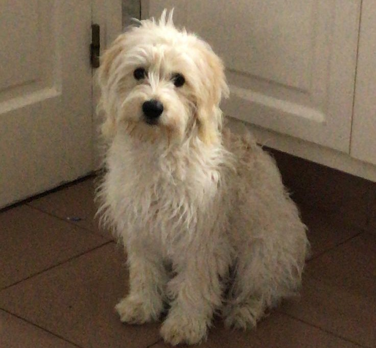

Wiki de FernanLost2014
Enciclopedia con los 18 personajes y entidades principales documentados del universo FernanLost2014. Toda la información está en esta misma página.
- 1 Fernanfloo
- 2 Curly
- 3 La Rana René
- 4 Zoe
- 5 Chorizo
- 6 Juan
- 7 Party
- 8 Rootkit.hor
- 9 Rojo
- 10 Personaje 10
- 11 Personaje 11
- 12 Personaje 12
- 13 Personaje 13
- 14 Personaje 14
- 15 Personaje 15
- 16 Personaje 16
- 17 Personaje 17
- 18 Personaje 18
1. Fernanfloo

Protagonista
Información: Youtuber salvadoreño, su historia en la plataforma de entretenimiento youtube, comenzó en 2011. Se hizo famoso por gameplays donde su humor era lo más destacado, también hizo vlogs y animaciones para su audiencia. Su mejor amigo, es su perrito Curly, a quien aprecia mucho aclarandolo casi siempre :)))
2. Curly

Compañero
Información: El perrito de nuestro querido Fernan el crack, convirtiéndose en una de las mascotas principales de el canal, Curly es recordado y amado por los Fans así como por el mismo Fernanfloo !!! Curly además de estar en el canal de Fernanfloo, tuvo su propio canal de gameplays donde este jugó Minecraft, Roblox y otros juegos famosos de época, simplemente un capo nuestro amigo :D No olvidemos que también debutó en la fama por sus discos musicales junto a Party y Zoe en su banda The Doogs [2012 - 2016]
3. La Rana René

Entidad
Información: Una ranita de peluche la cual fue obtenida por Fernanfloo en una maquinita de garra, desde entonces la Rana René ha acompañado a Fernan en distintos videos como The Forest o Fan games de Fnaf. René cuenta con un hermano, siendo menor que él, tuvo una relación amorosa con su propia sangre lo cual hizo que los medios se alteraran. Fernan apoyaba esta relación a tal punto de hacer que las dos ranas de peluche tuvieran un pequeño momento de pasión en uno de sus videos (siendo el clip removido por obvias razones XD)
4. Zoe

Personaje
Información: Zoe, considerada la hermana perdida de Curly y Party, no ha participado en ningún video públicamente, su anonimato se debe a causa de que no le gustan mucho las cámaras ni fotos ya que siente que no sale bien en estos. Aun así nuestro Fernan, quiso hacer público que sí son tres perros para que sus fans dejen las teorías, Zoe toda una máster ha estado presente en partidas de Warzone y CoD BlackOps junto a Curly, siendo los mejores por un tiempo. Esta muchacha me llena de orgullo :")
5. Chorizo

Chorizo
Información: Un simple chorizo sin más, siendo parte de nuestro canal por unos segundo tras la pregunta de cuanto es "1+1+chorizo". Frase más común de Fernanfloo, comida favorita de este mismo como de Curly. Chorizo Carajo!!!
6. Juan
Personaje Secundario
Información: Juan es el nombre de el hermano de Fernanfloo, este ha acompañado a su hermano en distintos videos con dinámicas únicas, estuvo presente en gameplays de Mortal Kombat X, el video más conocido donde este sale es la prueba de fuerza de el mismo juego antes mencionado. Juan desarrolló cierta fobia a los JellyBeans después de "JellyBean Challenge" puesto que afirma que ahora los sabores más feos lo atormentan en sus sueños, vaya dato perturbador D:
7. Party

Entidad
Información: Aquí va la info...
8. Rootkit.hor

Variante
Información: Aquí va la info...
9. Rojo

Personaje
Información: Aquí va la info...
10. Personaje 10

Editar
Información: Editar este bloque...
11. Personaje 11

Editar
Información: Editar este bloque...
12. Personaje 12

Editar
Información: Editar
13. Personaje 13

Editar
Información: Editar
14. Personaje 14

Editar
Información: Editar
15. Personaje 15

Editar
Información: Editar
16. Personaje 16

Editar
Información: Editar
17. Personaje 17

Editar
Información: Editar
18. Personaje 18

Editar
Información: Editar